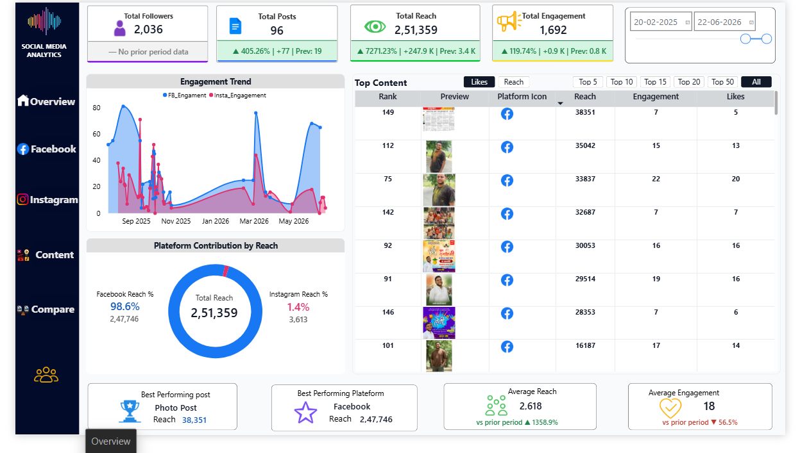

01
Leadership needs reliable KPIs
Executive dashboards for sales, operations, finance, revenue, cost, and campaign performance.
- Power BI dashboards
- DAX KPI measures
- Finance/MIS reporting
3+ years across Power BI, SQL, Python ETL, finance/MIS reporting, and data engineering with critical thinking, stakeholder collaboration, and business-first problem solving.

Built with the tools your team already trusts
Built for Power BI Developer and BI/Data Engineer roles where dashboards, SQL pipelines, DAX, RLS, finance analytics, business understanding, and team collaboration matter.
Executive dashboards for sales, operations, finance, revenue, cost, and campaign performance.
Structured models, validation checks, RLS, scheduled refresh, gateway setup, and Power BI Service administration.
Python, SQL, Power Automate, and refresh alerts to reduce recurring report preparation work.
I have worked across Power BI development, SQL data modeling, Python ETL, MIS dashboards, finance and operations reporting, RLS, validation checks, and Power BI Service governance.
Best fit: Power BI Developer, BI Developer, Data Engineer, MIS Reporting Analyst, or BI Analyst roles where clear thinking and cross-team collaboration matter.
Reach out for interview availabilityPython and REST API pipelines processed daily records with retry logic and validation.
RLS and role-based access supported secure self-service analytics at scale.
Self-service Power BI dashboards replaced static Excel and ad-hoc reporting flows.
Optimized DAX and SQL models improved report performance and usability.
My work combines technical BI delivery with business context: finance dashboards, revenue and cost tracking, operational KPIs, campaign analytics, and stakeholder-ready reporting.

Facebook and Instagram reporting unified with Meta API, SQL, Power BI, and Fabric Gateway.
View Dashboard ↗
Ride demand, cancellations, revenue, distance, and vehicle utilization dashboard.
View Dashboard ↗
Delivery time, outlet performance, product performance, and retail operations reporting.
View Dashboard ↗
Restaurant discovery, ratings, cuisine, pricing, and location insights dashboard.
View Dashboard ↗
Constituency, party, candidate, vote share, and stakeholder performance analytics.
View Dashboard ↗
Transaction volume, uptime, withdrawals, failures, and branch/location performance.
View Dashboard ↗
Team, season, venue, player, and match performance dashboard for cricket storytelling.
View Dashboard ↗
API-powered dashboard for current conditions, forecast tracking, and automated refresh.
View Dashboard ↗
Track, artist, popularity, audio feature, playlist, and listening behavior analytics.
View Dashboard ↗


Best for SMBs and founders needing weekly MIS reports.
Best for teams with multiple data sources and no current BI setup.
Best for teams burning time on repetitive reporting.
Tell me about your data and what you want to see.
I send deliverables, timeline, and fixed price.
You get updates at each milestone.
Delivery with documentation and 30-day support.
Typically within 2-3 business days after scope confirmation. Same-week starts are possible for urgent work.
Excel, Google Sheets, SQL Server, PostgreSQL, Snowflake, REST APIs, Azure, Salesforce, HubSpot, and more.
Yes. Revisions are included within agreed scope, and post-delivery bug fixes are covered for 30 days.
Use the Power BI Developer resume above, or contact me directly for interview availability and project discussions.
Contact for BI/Data role